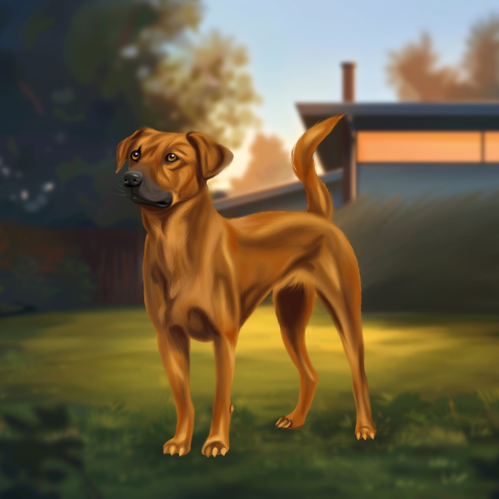

Genel bir tanımlama istersen

Kuyruk Durumu:
Kuyruğunu sıkıca vücuda sarabilir veya dikleştirebilir. Kuyruk sallama genellikle durur veya çok yavaşlar.
Hareket Durumu:
Anksiyetik bir köpek, solunum hızı ve kalp atış hızı genellikle artabilir. Bu, köpeğin stres altında olduğunun bir işaretidir. Aynı zamanda titreme eyleminde bulunabilir.
Göz Teması:
Gözleri genellikle büyümüş ve genişlemiş olabilir. Göz temasından kaçınabilirler veya kaçınma davranışı gösterebilirler.
Vücut Dili:
Anksiyetik bir köpeğin kasları genellikle gergindir. Sırtı kavisli olabilir ve kasları sıkı bir şekilde gerilmiş gibi görünebilir.Tüyleri elektriklenebilir.
Sesler:
Bazı korkmuş köpekler sessiz kalabilirken, diğerleri hafif hırlama, mırıldanma, uluma gibi sesler çıkarabilir.
Davranış Değişiklikleri:
Bu durumun ki yok?